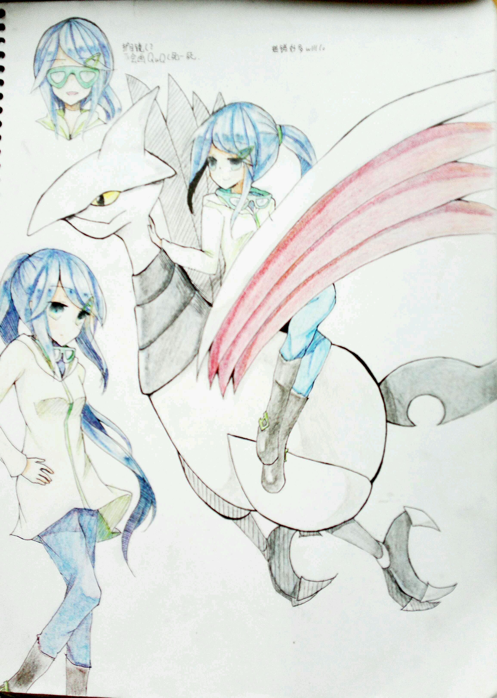

本文最后更新于：2020年6月29日 下午

（初版立绘）
姓名
墨空 凪阳（すみぞら なぎひ/Sumizora Nagihi）
- “墨空”跟“澄空”同音，意指事物的两面性。“凪”是风平浪静之意，“阳”与“日”同音，“凪阳”即“风平浪静之日”。
性别：♀
年龄：17岁
职位：克洛诺斯地区 薰风镇 薰风道馆（飞行系）道馆馆主
角色简介
着装简约风，常常连帽风衣/卫衣配T-恤，因为要飞行所以不可能穿裙子，其实私底下很喜欢和服，多穿皮靴。随身携带护目镜，不用时挂在脖子上。
开朗元气系少女，待人亲切友善，有点自来熟，拥抱星人（只要是亲密的女性朋友或能够抱的宝可梦都会惨遭毒手，无论何时何地）。吐槽役，对于槽点反应很快，当然语速更快，常常一口气说出长长的吐槽句，让人无从吐槽（虽然这本身就是个槽点）。话痨，有点八卦。
对于天空有着近乎偏执的热爱，从小就立志成为一个优秀的飞行师，最喜欢晴空的颜色，不喜欢所有不能飞的恶劣天气，当然更讨厌的是大气污染。因为长期训练，所以平衡感、远视力和动态视力都很优秀，对风向和风速很敏感，不过因为太依赖飞行了，所以体力一般。不会游泳。
凪阳虽然给人以乐观向上的印象，其实是一个非常胆小懦弱的孩子，晕血，害怕战争，害怕死，平时作为飞行系馆主表现得很有担当，但是一旦压力超过她所能承受，她就会忍不住想要逃避，喜欢飞行也多半有着逃离地上那些破事的意味。然而另一方面，她又非常讨厌这样胆小的自己，并一直尝试着改变，尤其是被前任打了鸡血（？）之后更是下定决心变得更强更勇敢，直面恐惧并与自己的胆小战斗。
尽管到现在还是没什么进展，但就这个决心而言，也可以算是勇敢了吧？
相关Side篇
宝可梦
毽子棉♀
特性：叶绿素
初始宝可梦，从小跟凪阳一起大，亲密到不用心点感应也能明白对方的想法，彼此方对方是最重要的存在。元气，小调皮。
盔甲鸟♂
特性：结实
经历过很多，给人很沧桑的感觉。对凪阳和别的同伴很冷淡，其实是个傲娇。物防手，空中交通工具，飞行经验最丰富。
大王燕♂
勇士雄鹰♂
铃铛响♀
特性：飘浮
风间前妻冬木的宝可梦，在收凪阳为徒后赠送，是风间的回忆。
比比鸟、烈雀
是凪阳曾经的宝可梦。似乎不在她现在的队伍里，是发生了什么吗？
本博客所有文章除特别声明外，均采用 CC BY-SA 3.0协议 。转载请注明出处！